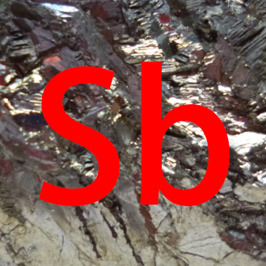

Markdown 使用说明¶
Markdown 是一种轻量级标记语言，它允许人们使用易读易写的纯文本格式编写文档。
常用的 Markdown 编辑器有 Typora、Visual Studio Code、Atom 等（均跨平台）。MkDocs 所支持的 Markdown 语法为普通 Markdown 语法的扩展。
标题¶
标题行以若干个 # 开头，井号的数量代表标题的优先级。注意除了文档第一行以外，我们一般不用一级标题。
1 2 3 4 5 6 | |
显示效果：
我是一级标题
我是二级标题
我是三级标题
我是四级标题
我是五级标题
我是六级标题
段落格式¶
在 Markdown 文档中，每两段之间需要用一个空行分隔。同时，Markdown 可以使用以下几种字体格式：
1 2 3 4 5 6 7 8 9 10 11 | |
显示效果如下：
斜体
粗体
粗斜体
删除线
下划线
谢谢参与
同时，可以通过在单独的一行中输入 *** 绘制一个分割线。如果要在灰色的文字上（如脚注）覆盖黑幕，可以使用 <span class="foot-heimu">，如下面这个例子：
1 2 3 | |
这是一个例子：114514，1919810！1
公式¶
Markdown 支持 $\LaTeX$ 公式，具体用法分为以下两类：
行间公式¶
行间公式用两个 $ 包围，公式的两端必须要有一个空格。
如下面的这段话
1 2 3 4 5 6 7 | |
效果如下：
由于特殊的结构，超盐酸具有超强的氧化性。
根据赵明毅先生的测算，超盐酸的酸性是魔酸的 3451 万倍，
以至超盐酸气体与氦气在常温下剧烈反应放出 $\rm 9000\;{^\circ}C$ 的高温，
生成二氯化九氦液体，其中氦显 $+\frac 29$ 价。
独立公式¶
独立公式一般用于较大的公式，公式必须放在一个或多个单独的行中，用两个 $$ 包围。
由于 MkDocs 的神秘原理，平时在公式换行时所使用的 \\ 需要改成 \\\\，否则会失效。
如下面这段话
1 2 3 4 5 6 7 8 9 | |
效果如下：
$$ \begin{aligned} &\frac{\sin 2x}{2n\cos x}\\ =&\frac{\sout{2}\sin x\,\sout{\cos x}}{\sout{2}n\,\sout{\cos x}}\\ =&\frac{{\rm si\sout{n}\;}x}{\sout{n}}\\ =&{\rm six}\\ =&6 \end{aligned} $$
网站使用 $\KaTeX$ 渲染公式，可能不支持标准 $\LaTeX$ 中的部分关键字，请务必注意。
关于 $\LaTeX$ 如何使用，大家可以自行百度或谷歌。
列表¶
列表分为无序列表和有序列表，无序列表每行以 + 或 - 或 * 开头，有序列表每行以 x. 开头（其中 x 为该行的序号），后接一个空格，然后是该行的内容。
无论是无序列表还是有序列表，列表的第一行必须与列表前的最后一行隔开一行，列表的最后一行必须与列表后的第一行隔开一行。
如果列表中某一项需要分行，则两行之间需要空出一行，同时后面的每一行都必须以 4 个空格开头。
下面是一个例子：
1 2 3 4 5 6 7 8 9 10 11 12 13 14 15 16 17 18 | |
效果如下：
在这个伟大的过程中，硼先生还发表了数十种全新理论。其中一些很重要的理论及研究成果如下：
- 发现雨水的一般 pH 值应该是在 $9 \sim 10$ 之间；
- 培养出酸性草木灰；
- 用 $\rm MnO_2$ 催化 $\rm NH_3$；
-
重新定义氧化还原反应：
不含氧的就是还原产物，含氧元素的是氧化产物。
另外，赵明毅大师还致力于改善人类生活。终于找到了把一瓶水喝成五瓶水的方法：
- 首先到小卖部/副食店
- 买一瓶康 × 傅茉莉蜜茶
- 喝一半加一半的水就变成了茉莉清茶
- 再喝一半后加一半的水就变成了茉莉清茶（无糖版）
- 再喝一半加一半水就变成了农夫山泉（有点甜）
- 再喝一半加一半水那就是矿泉水了！
- 可以喝到五种口味哦！
同时，列表可以嵌套，被嵌套的列表每一行开头都必须比上一层列表多四个空格。
1 2 3 4 5 6 7 | |
显示效果：
- 第一行
- 第二行
- 2.1
- 2.1.1
- 2.1.2
- 2.2
- 2.1
- 第三行
区块¶
与列表类似，区块中每一行以 > 和一个空格开头。
对于多行区块，每两行之间需要用一个仅包含一个 > 的行隔开。
例：
1 2 3 | |
显示效果：
“诬蔑？我不在乎，伟人都是这么过来的！”
“你们将为你们的无知和狂妄而流下悔恨的眼泪，而这些，我都将作为我科学事业道路上的绊脚石。”
代码¶
代码分为行间代码和代码区块。
行间代码¶
行间代码用两个 ` 包围（电脑键盘上 1 左边的那个按键）。
例：
1 2 3 | |
显示效果：
无序列表每行以 + 或 - 或 * 开头，有序列表每行以 x. 开头（其中 x 为该行的序号）。
在碳正正中，一般使用 printf 和 std::cout 进行输出。
代码区块¶
代码区块以一行 ``` lang 开头，其中 lang 为语言，可以是 cpp、py、java 等，也可以省略，以一行 ``` 结尾。
例：
``` py
a = 1
print("Hello, World!")
```
显示效果：
1 2 | |
链接¶
链接格式为：[链接名称](链接地址)
例：
1 | |
显示效果：
因此，在本贴吧（超理吧）发布的大多数疑似学术研究的内容都是不可靠的。
图片¶
Markdown 中插入图片的格式为：
其中，图片地址 是以当前文件所在的文件夹作为当前目录的。所以，如果要从 friendly/exmp.md 调用上一层的 Antimoney.png，需要按照以下方式写：
1 | |
其中 .. 表示上一级目录。显示效果如下：

但是，一般在写文档的时候，图片居中、加上注释会好看一些，这时，我们应该这么写：
1 2 3 4 5 6 7 8 | |
显示效果如下：
-
嗯哼哼，啊啊啊啊啊啊啊啊！！！ ↩